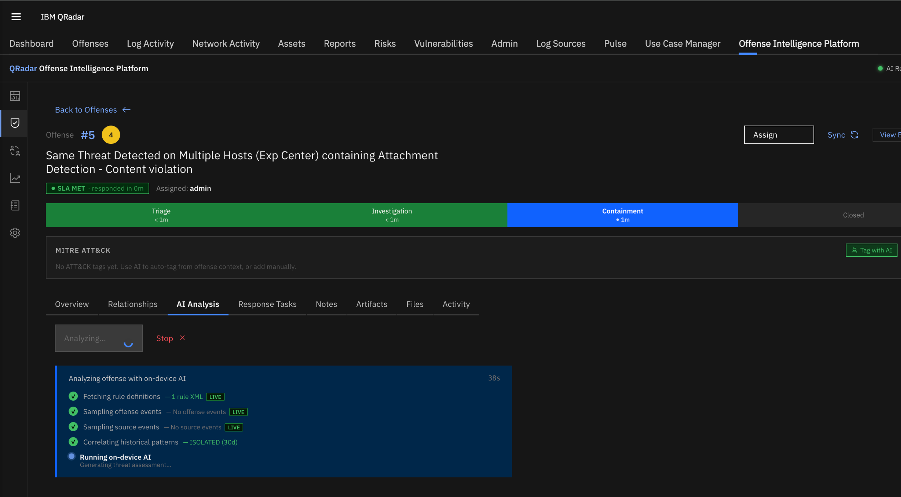

AI Analysis¶
Overview¶
The AI analysis engine is the core of QRadar Offense Intelligence. It takes a raw QRadar offense and produces a structured, evidence-grounded threat analysis in approximately 60–90 seconds — without sending any data outside the appliance.
The model used is Qwen3.5-9B (Q5 quantized, 6.1 GB), running locally via llama.cpp. No API keys, no cloud connectivity, no data egress.
How It Works¶
Analysis runs in five phases, each building on the last:
Phase 1 — Rule XML Fetch¶
The app fetches the full XML definition of every QRadar rule that triggered the offense directly from the QRadar API. The rule XML contains the actual detection conditions — log source filters, threshold counters, reference set checks, network filters — parsed and cleaned before being sent to the model.
This is what allows the AI to answer "why did this rule fire?" with specifics, rather than generic statements.
Phase 2 — Event Sampling¶
Two AQL queries run against QRadar:
- Offense events — events directly associated with the offense (
INOFFENSEquery), up to the configured limit - Source timeline — all activity from the offense source IP/user in the configured lookback window
Events are deduplicated using QRadar's native coalescing key (QID, sourceIP, destIP, destPort, username) so repeated events are counted rather than listed individually. This keeps the prompt compact and focused.
Phase 3 — Historical Context¶
The app queries its local offense cache to compute:
- How many times each triggering rule has fired in the past 30 days
- How many offenses the source has been involved in
- Whether this offense matches a recurring pattern or is an isolated first occurrence
Phase 4 — False Positive Pre-Screening¶
Before the LLM call, the app checks for known false positive signals:
- R2R directionality — events where both source and destination are outside the QRadar network hierarchy (strong indicator of a network hierarchy misconfiguration)
- Management IPs — source IPs in
169.254.x.xor127.x.x.xranges - Reference set exclusions — rule XML references to exclusion reference sets that may be pending tuning
These signals are injected into the prompt as FALSE POSITIVE CONFIDENCE: HIGH/MEDIUM/LOW so the model's verdict is grounded in pre-computed signals, not just pattern matching.
Phase 5 — LLM Inference + Relationship Scoring¶
The assembled prompt is sent to the local llama.cpp server. The model returns a structured 7-section analysis. After analysis completes, the app computes pairwise relationship scores between this offense and all others in the 30-day window and stores them in the offense_relationships table — used by the Relationship Graph and Campaign Detection.

AI Analysis tab showing the 5-phase pipeline.Analysis Output¶
Each analysis produces seven sections:
VERDICT¶
One of: TRUE POSITIVE | LIKELY FALSE POSITIVE | NEEDS INVESTIGATION
Followed by a one-sentence explanation referencing the specific signals that drove the verdict (IP addresses, rule conditions, recurrence patterns).
WHY THIS RULE FIRED¶
A precise explanation of which rule conditions were satisfied, referencing actual IPs, usernames, QIDs, and payload patterns from the sampled events. Derived directly from the rule XML — not inferred.
SEVERITY ASSESSMENT¶
A risk assessment grounded in event volume, repeat counts, payload patterns, and the magnitude/severity/credibility scores from QRadar. Explains whether the pattern suggests a genuine threat or misconfiguration noise.
LIKELY ATTACK VECTOR¶
The probable attack technique or activity, with specific src/dst pairs and payload samples cited as evidence. Maps to MITRE ATT&CK where applicable.
RECOMMENDED IMMEDIATE ACTIONS¶
3–5 specific, actionable steps naming the actual source IPs, rule names, or reference sets involved. Automatically extracted and saved as response tasks if you click Load AI Tasks.
FALSE POSITIVE TUNING¶
If the verdict is false positive: 2–4 specific tuning steps referencing the exact rule name, reference set names, and condition text. If true positive: No tuning recommended — investigate as genuine threat.
INVESTIGATION STEPS¶
3–5 forensic steps referencing the actual IPs, users, and payload patterns in the evidence. These form the basis for the investigation task list.
Analysis Queue¶
The analysis queue is a single-worker queue — one offense is analyzed at a time to prevent resource contention on the LLM.
- Queue depth is shown in the Analysis Queue panel on any offense's AI tab
- Position in the queue is shown so analysts know how long to wait
- Human-triggered analyses take priority — the MITRE Tagger scheduler job yields immediately when a human queues an analysis
To trigger analysis: open any offense → AI Analysis tab → Analyze.
Inference Timeout¶
The default inference timeout is 600 seconds (10 minutes). On slower hardware where token generation is below ~1 token/second, longer analyses may time out.
If you see timed out in the analysis queue, increase the timeout under Settings → System Settings → AI Inference Timeout. A value of 900 seconds (15 minutes) is recommended for CPU-only deployments.
Auto-Triage¶
Auto-triage automatically queues new offenses for AI analysis when they meet configurable thresholds for magnitude and severity. Enable and configure it under Settings → System Settings → Auto-Triage.
| Setting | Description |
|---|---|
| Enabled | Toggle auto-triage on/off |
| Minimum Magnitude | Only queue offenses at or above this magnitude (0–10) |
| Minimum Severity | Only queue offenses at or above this severity (0–10) |
| Match condition | Either (OR) — queue if magnitude OR severity meets threshold. Both (AND) — require both. |
Executive Summary¶
Once AI analysis has completed for an offense, click AI Generate in the Executive Summary section of the Overview tab to generate a formal incident report. The summary is structured as a shareable markdown document including verdict, key evidence, risk assessment, recommended actions, and investigation steps.
The summary can be manually edited and saved, or copied to clipboard for sharing with stakeholders.
Info
The AI Generate button is disabled until AI analysis has been run on the offense. Run analysis first from the AI Analysis tab.
Event Sampling Configuration¶
The amount of data fed to the AI can be tuned under Settings → System Settings → AI Event Sampling:
| Setting | Default | Description |
|---|---|---|
| Offense event limit | 10 | Max rows from the INOFFENSE AQL query |
| Source event limit | 15 | Max rows from the source timeline query |
| Offense max window (hours) | 24 | Cap on the offense event query lookback |
| Source lookback (hours) | 24 | How far back to search source activity |
Increasing these values gives the model more evidence to work with but increases prompt size and inference time.